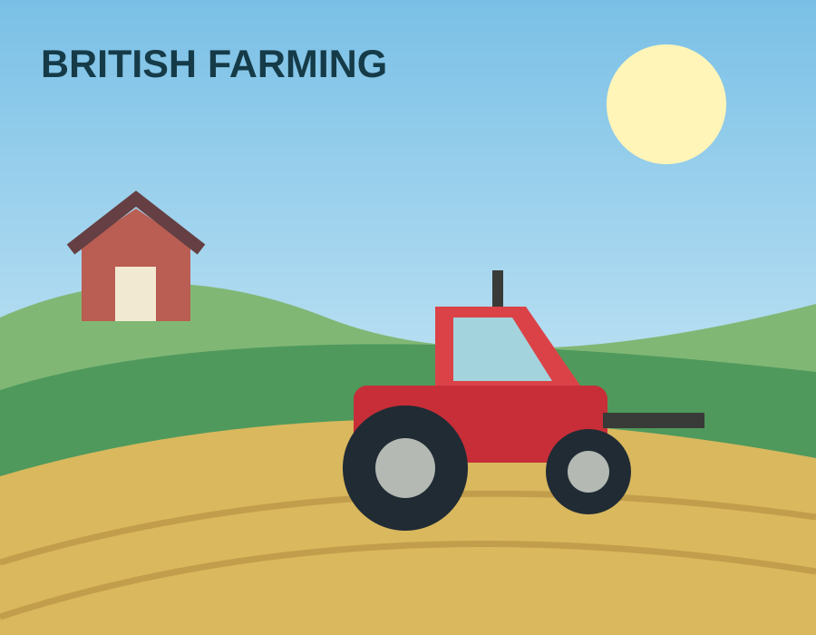
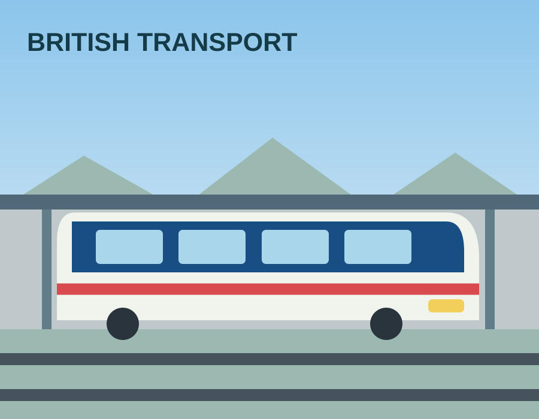

01
✳
Open discussion
Policy ideas will be explored through workshops, with opportunities to consider evidence and different viewpoints.
The Common Sense Party is being established in Great Britain. Explore the founding process, how ideas will be discussed, and how to contact the organising team.


We're in the early stages of establishing a political party. The constitution, organisational structure and policy programme are being developed.
Policy ideas will be explored through workshops, with opportunities to consider evidence and different viewpoints.
Founding documents will set out how decisions are made, officers are accountable and policies are adopted.
The initial focus is establishing a sound organisation, with the longer-term intention of contesting elections.
Before formal policies are adopted, the party intends to hold structured discussions, review evidence, consider costs and document decisions.
The party name, visual identity and registration are provisional while the founding arrangements are finalised.
These are proposed workshop topics, not adopted party policies.
Agriculture, food production and rural communities.
Taxation, public expenditure and fiscal choices.
Health, education and public service delivery.
Business, employment, infrastructure and productivity.
All workshop topics and arrangements remain subject to confirmation by the founding organisation.
Questions about The Common Sense Party? You can contact the founding team by email. No membership or donation data is being collected through this website.